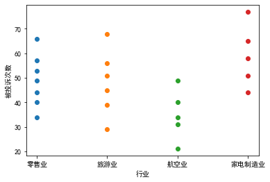

Python-人工智能数学基础15
15 方差分析
15.1 方差分析概述
通过对实验数据进行分析, 检验方差相同的多个正态总体均值是否相等
实例: 为了对几个行业的服务质量进行评价, 消费者协会在4个行业中分别抽取了不同的企业作为样本.最近一年中消费者总共对23家企业投诉的次数如下表所示
|
| 零售业 | 旅游业 | 航空业 | 家电制造业 | |
|---|---|---|---|---|
| 观测值 | ||||
| 1 | 57 | 68 | 31 | 44 |
| 2 | 66 | 39 | 49 | 51 |
| 3 | 49 | 29 | 21 | 65 |
| 4 | 40 | 45 | 34 | 77 |
| 5 | 34 | 56 | 40 | 58 |
| 6 | 53 | 51 | None | None |
| 7 | 44 | None | None | None |
|

从散点图中可以看出, 不同行业被投诉的次数的均值是有差异的, 但这种差异也可能是由抽样的随机性造成的, 需要有更准确的方法来检验这种差异是否显著
15.2 方差的比较
组内方差: 某一因素的同一水平(同一个总体)下样本数据的方差, 例如, 零售业被投诉次数的方差. 组内方差只包含随机误差
组间方差: 某一因素的不同水平(不同总体)下个样本之间的方差, 例如, 4个行业被投诉次数之间的方差. 组间方差既包含随机误差, 也包含系统误差
如果不同行业对投诉次数没有影响, 则组间误差中只包含随机误差, 没有系统误差, 此时组件误差与组内误差经过平均后的数值很接近, 它们的比值会接近于1
如果不同行业对投诉次数有影响, 在组间误差中除包含随机误差之外, 还会包含系统误差, 此时它们的比值会大于1
15.3 方差分析
15.3.1 单因素方差分析
与方差分析相关的统计量:
1 水平(总体)的均值
|
[49.0, 48.0, 35.0, 59.0]
2 全部观察值的总均值
全部观察值$X_ij$的总和 除以 观察值的个数
|
47.869565217391305
3 总离差平方和(SST)
样本全部观察值$X_{ij}$与总平均值$\bar{\bar X}$的离差平方和, 反映全部观察值的离散情况.
|
4164.608695652174
4 水平项平方和(SSA)
各个水平$A_i$下样本均值$\bar X_i$与样本总平均$\bar{\bar X}$的偏差平方和, 它在一定程度上反映了各总体均值$\mu_j$之间的差异引起的波动, 又称组间平方和, 该平方和既包括随机误差, 也包括系统误差
|
1456.608695652174
5 误差项平方和(SSE)
在各个总体$A_i$下, 样本数据$X_{ij}$与其总体均值$\bar X_i$的偏差平方和反映了抽样的随机性引起的样本数据$X_{ij}$的波动, 又称组内平方和, 该平方和反映的是随机误差的大小
|
2708.0
6 总离差平方和的分解
7 各自由度
$SST$的自由度为$n-1$, 其中$n$为全部观察值的个数
误差项离差平方和($SSE$)的自由度为$k-1$, 其中$k$为因素水平(总体)的个数
水平项离差平方和($SSA$)的自由度为$n-k$
8 各误差的均方差MSA和MSE
组间方差$SSA$的均方差记为$MSA$
组内方差$SSE$的均方差记为$MSE$
计算方法是用误差平方 除以 相应的自由度
设置检验统计量
|
3.4066426904716036
上述分析的结果可排成表格的形式, 称为单因素实验方差分析表:
| 方差来源 | 误差平方和 | 自由度 | 均方差 | F值 |
|---|---|---|---|---|
| 组间 | SSA | k-1 | MSA | MSA/MSE |
| 组内 | SSE | n-k | MSE | |
| 总和 | SST=SSE+SSA | n-1 |
15.3.2 方差分析中的多重比较
为了进一步了解因素A的各个总体对观测变量的具体影响效果
多重比较检验就是通过对各个总体观测变量均值的逐对比较, 来进一步检验到底哪些均值之间存在差异, 并找出最优水平.
如果原假设$H_0:\mu_i=\mu_j,i,j=1,2,…,r,i\ne j$成立, 检验统计量应较小, 因此拒绝域为$|\bar X_i-\bar X_j|>t_{\alpha/2}\sqrt{MSE(\frac{1}{n
_i}+\frac{1}{n_j})}$
如果满足拒绝域条件, 则认为$\mu_i$与$\mu_j$有显著性差异, 否则认为它们之间没有显著性差异
例15.2
|
| 无色 | 粉色 | 橘黄色 | 绿色 | |
|---|---|---|---|---|
| 样本 | ||||
| 1 | 26.5 | 31.2 | 27.9 | 30.8 |
| 2 | 28.7 | 28.3 | 25.1 | 29.6 |
| 3 | 25.1 | 30.8 | 28.5 | 32.4 |
| 4 | 29.1 | 27.9 | 24.2 | 31.7 |
| 5 | 27.2 | 29.6 | 26.5 | 32.8 |
|
[27.32, 29.56, 26.44, 31.46]
|
39.083999999999975
|
2.4427499999999984
令显著性水平$\alpha=0.05,t_{\alpha/2}(16)=2.12,n_i=n_j=5,i,j=1,2,3,4,5$
$t_{\alpha/2}\sqrt{MSE(\frac{1}{n_i}+\frac{1}{n_j})}=2.096$
|
2.1199052992210112
|
2.095
|
|\bar X_1 - \bar X_2| =2.24)
|\bar X_1 - \bar X_3| =0.88)
|\bar X_1 - \bar X_4| =4.14)
|\bar X_2 - \bar X_3| =3.12)
|\bar X_2 - \bar X_4| =1.9)
|\bar X_3 - \bar X_4| =5.02)
依据上面结果可得出相应的影响效果,
如$|\bar X_1 - \bar X_2|>2.095$, 则说明$X_1$和$X_2$有显著性差异, 也就是说明无色和粉色对产品销售的影响有显著性差异
$|\bar X_2 - \bar X_4|<2.095$, 说明$X_2$和$X_4$没有显著性差异, 也就是说粉色和绿色对产品销售的影响没有显著性差异
15.3.3 多因素方差分析
无交互效应的双因素离差平法和分解: $SST=SSA+SSB+SSE$
有交互效应的双因素离差平方和分解: $SST=SSA+SSB+SSAB+SSE$
| 方差来源 | 误差平方和 | 自由度 | 均方差MS | F值 |
|---|---|---|---|---|
| 因素A | $SSA$ | $s-1$ | $MSA=\frac{SSA}{s-1}$ | $F_A=\frac{MSA}{MSE}$ |
| 因素B | $SSB$ | $r-1$ | $MSB=\frac{SSB}{r-1}$ | $F_B=\frac{MSB}{MSE}$ |
| 因素AB交互作用 | $SSAB$ | $(r-1)(s-1)$ | $MSAB=\frac{SSAB}{(r-1)(s-1)}$ | $F_{AB}=\frac{MSAB}{MSE}$ |
| 误差 | $SSE$ | $rs(m-1)$ | $MSE=\frac{SSE}{rs(m-1)}$ | |
| 总和 | $SST$ | $rsm-1$ |
| 统计量 | 服从分布 |
|---|---|
| $F_A=\frac{MSA}{MSE}$ | $\left[s-1,rs(m-1)\right]$ |
15.3.3 多因素方差分析
无交互效应的双因素离差平法和分解: $SST=SSA+SSB+SSE$
有交互效应的双因素离差平方和分解: $SST=SSA+SSB+SSAB+SSE$
| 方差来源 | 误差平方和 | 自由度 | 均方差MS | F值 |
|---|---|---|---|---|
| 因素A | $SSA$ | $s-1$ | $MSA=\frac{SSA}{s-1}$ | $F_A=\frac{MSA}{MSE}$ |
| 因素B | $SSB$ | $r-1$ | $MSB=\frac{SSB}{r-1}$ | $F_B=\frac{MSB}{MSE}$ |
| 因素AB交互作用 | $SSAB$ | $(r-1)(s-1)$ | $MSAB=\frac{SSAB}{(r-1)(s-1)}$ | $F_{AB}=\frac{MSAB}{MSE}$ |
| 误差 | $SSE$ | $rs(m-1)$ | $MSE=\frac{SSE}{rs(m-1)}$ | |
| 总和 | $SST$ | $rsm-1$ |
| 统计量 | 服从分布 |
|---|---|
| $F_A=\frac{MSA}{MSE}$ | $\left[s-1,rs(m-1)\right]$ |
15.3.3 多因素方差分析
无交互效应的双因素离差平法和分解: $SST=SSA+SSB+SSE$
有交互效应的双因素离差平方和分解: $SST=SSA+SSB+SSAB+SSE$
| 方差来源 | 误差平方和 | 自由度 | 均方差MS | F值 |
|---|---|---|---|---|
| 因素A | $SSA$ | $s-1$ | $MSA=\frac{SSA}{s-1}$ | $F_A=\frac{MSA}{MSE}$ |
| 因素B | $SSB$ | $r-1$ | $MSB=\frac{SSB}{r-1}$ | $F_B=\frac{MSB}{MSE}$ |
| 因素AB交互作用 | $SSAB$ | $(r-1)(s-1)$ | $MSAB=\frac{SSAB}{(r-1)(s-1)}$ | $F_{AB}=\frac{MSAB}{MSE}$ |
| 误差 | $SSE$ | $rs(m-1)$ | $MSE=\frac{SSE}{rs(m-1)}$ | |
| 总和 | $SST$ | $rsm-1$ |
| 统计量 | 服从分布 |
|---|---|
| $F_A=\frac{MSA}{MSE}$ | $\left[s-1,rs(m-1)\right]$ |
| $F_B=\frac{MSB}{MSE}$ | $\left[r-1,rs(m-1)\right]$ |
| $F_{AB}=\frac{MSAB}{MSE}$ | $\left[(r-1)(s-1),rs(m-1)\right]$ |
m为试验次数($\ge2$)
例 15.3
有$s=4$个品牌的彩电在$r=5$个地区销售, 为分析品牌和地区对销售量是否有影响, 每个品牌在各个地区的销售量如下, 试分析品牌和地区对销售量是否有显著影响?$(\alpha=0.05)$
|
| 销售地区(因素B) | B1 | B2 | B3 | B4 | B5 |
|---|---|---|---|---|---|
| 品牌销售表(因素A) | |||||
| A1 | 365 | 350 | 343 | 340 | 323 |
| A2 | 345 | 368 | 363 | 330 | 333 |
| A3 | 358 | 323 | 353 | 343 | 308 |
| A4 | 288 | 280 | 298 | 260 | 298 |
$SST=365^2+350^2+…+298^2-\frac{6569^2}{20}=17888.95$
|
17888.950000000186
$SSA=\frac{1}{5}(1721^2+1739^2+…+1424^2)-\frac{6569^2}{20}=13004.55$
|
13004.55000000028
$SSB=\frac{1}{4}(1356^2+1321^2+…+1262^2)-\frac{6569^2}{20}=2011.7$
|
2011.7000000001863
$SSE=SST-SSA-SSB=2872.7$
|
2872.6999999997206
| 差异源 | 平方和 | 自由度 | 均方 | F值 |
|---|---|---|---|---|
| 品牌(因素A) | SSA = 13004.55 | s - 1 = 3 | MSA = SSA / (s - 1) = 4334.85 | MSA / MSE = 18.10777 |
| 地区(因素B) | SSB = 2011.7 | r - 1 = 4 | MSB = SSB / (r - 1) = 502.925 | MSB / MSE = 2.100846 |
| 误差 | SSE = 2872.7 | (r - 1)(s - 1) = 12 | MSE = SSE / (rs(m - 1)) = 239.3917 | |
| 总和 | SST = SSA + SSB + SSE = 17888.95 | rsm - 1 = 19 |
由于$F_A=18.108>F_{0.95}(3, 12)=3.49$, 说明彩电的品牌对销售量有显著影响
由于$F_B=2.101<F_{0.95}(4, 12)=3.26$, 说明销售地区对彩电的销售没有显著影响
15.4 综合实例——连锁餐饮用户评级分析
15.4.1 单因素方差实例分析
某连锁餐饮在3个城市用户评分资料如表所示，已知各城市用户评分的分布近似与正态等方差，是以95%的可靠性判断城市对用户评分是否有显著影响？
|
| 用户评分 | 0 | 1 | 2 | 3 | 4 | 5 | 6 | 7 | 8 | 9 |
|---|---|---|---|---|---|---|---|---|---|---|
| 城市 | ||||||||||
| A | 10 | 9 | 9 | 8 | 8 | 7 | 7 | 8 | 8 | 9 |
| B | 10 | 8 | 9 | 8 | 7 | 7 | 7 | 8 | 9 | 9 |
| C | 9 | 9 | 8 | 8 | 8 | 7 | 6 | 9 | 8 | 9 |
方法1 使用scipy.stats.f_oneway()方法
|
|
单因素方差分析结果（f_oneway）: F = 0.10150375939849626, and p = 0.9038208903685354
方法2 利用statsmodels库函数中包含的anova_lm模型, 使用线性OLSModel进行方差分析
|
单因素方差分析结果（anova_lm）:
df sum_sq mean_sq F PR(>F)
city 2.0 0.2 0.100000 0.101504 0.903821
Residual 27.0 26.6 0.985185 NaN NaN
| city | S | |
|---|---|---|
| 0 | A | 10 |
| 1 | A | 9 |
| 2 | A | 9 |
| 3 | A | 8 |
| 4 | A | 8 |
| 5 | A | 7 |
| 6 | A | 7 |
| 7 | A | 8 |
| 8 | A | 8 |
| 9 | A | 9 |
| 10 | B | 10 |
| 11 | B | 8 |
| 12 | B | 9 |
| 13 | B | 8 |
| 14 | B | 7 |
| 15 | B | 7 |
| 16 | B | 7 |
| 17 | B | 8 |
| 18 | B | 9 |
| 19 | B | 9 |
| 20 | C | 9 |
| 21 | C | 9 |
| 22 | C | 8 |
| 23 | C | 8 |
| 24 | C | 8 |
| 25 | C | 7 |
| 26 | C | 6 |
| 27 | C | 9 |
| 28 | C | 8 |
| 29 | C | 9 |
3 手动计算各误差值, 实现单因素方差分析
|
单因素方差分析结果(手动计算）: F = 0.1015037593984973, and p=0.9038208903685354
由于$F
15.4.2 多因素方差分析实例
收集在环境等级(environment)和食材等级(ingredients)两个因素影响下的某连锁餐饮店的用户评价数据
|
| E | I | S | |
|---|---|---|---|
| 0 | 5 | 5 | 5 |
| 1 | 5 | 4 | 5 |
| 2 | 5 | 3 | 4 |
| 3 | 5 | 2 | 3 |
| 4 | 5 | 1 | 2 |
| 5 | 4 | 5 | 5 |
| 6 | 4 | 4 | 4 |
| 7 | 4 | 3 | 4 |
| 8 | 4 | 2 | 3 |
| 9 | 4 | 1 | 2 |
| 10 | 3 | 5 | 4 |
| 11 | 3 | 4 | 4 |
| 12 | 3 | 3 | 3 |
| 13 | 3 | 2 | 3 |
| 14 | 3 | 1 | 2 |
| 15 | 2 | 5 | 4 |
| 16 | 2 | 4 | 3 |
| 17 | 2 | 3 | 2 |
| 18 | 2 | 2 | 2 |
| 19 | 2 | 1 | 2 |
| 20 | 1 | 5 | 3 |
| 21 | 1 | 4 | 3 |
| 22 | 1 | 3 | 3 |
| 23 | 1 | 2 | 2 |
| 24 | 1 | 1 | 1 |
利用statsmodels中的anova_lm模块进行多因素方差分析
|
df sum_sq mean_sq F PR(>F)
E 1.0 7.22 7.220000 46.444444 7.580723e-07
I 1.0 18.00 18.000000 115.789474 3.129417e-10
Residual 22.0 3.42 0.155455 NaN NaN
由于$P值很小$, 说明环境和食材两个因素对用户评分影响较大